| 日付 | 2021年7月31日（土） - 2021年8月7日（土） | ||||||||
|---|---|---|---|---|---|---|---|---|---|
| 山域 | 東北の山 | ||||||||
| メンバー | 家族（妻、長女・10歳、長男・8歳） | ||||||||
| 山行形態 | 子連れ7泊8日キャンプ | ||||||||
| アクセス | 車、バス | ||||||||
| ルート |
|
2日目
本日は天候がいまいちのため、山は無理。
少々遠いが玉川温泉に行ってみることにする。
有名な温泉で、そばの遊歩道と合わせて行ってみたかった場所だ。
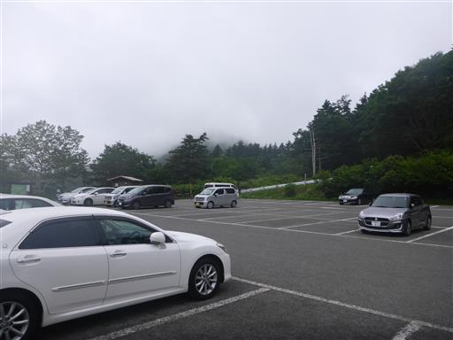
駐車場からの景色。湯気がもくもくと出ていて、まさに温泉の風景だ。
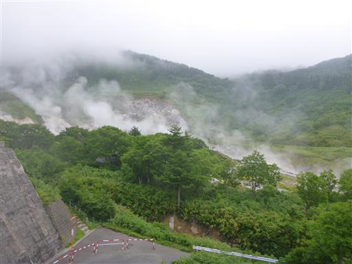
駐車場から少し歩いて、玉川温泉に到着。
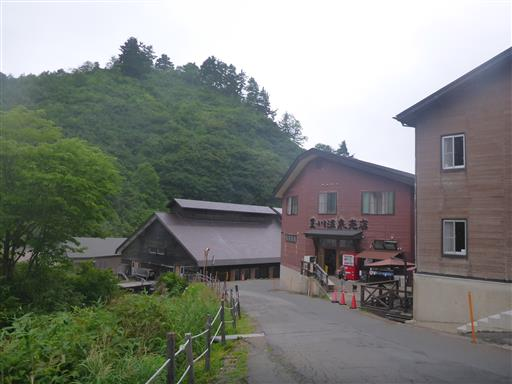
まずは食堂で昼食をとる。日曜なのに結構空いている。
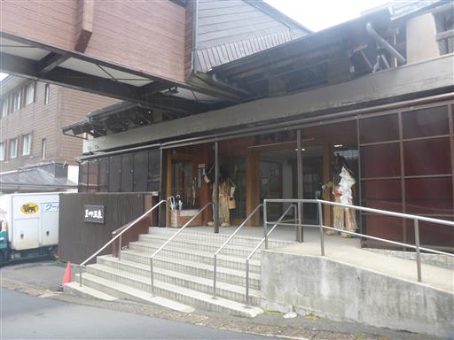
次は温泉へ。pH1.2の日本一の強酸性の温泉。
50%のお湯は入れるが、源泉100%の湯は小さな傷口がひりひり痛む。
飲泉場があるのだが、舐めてみただけですごく辛く強烈な味がする。
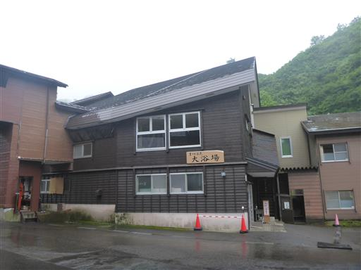
入浴後は玉川温泉自然研究路を歩いてみる。
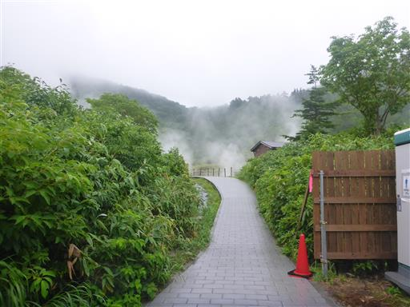
湯の花の採取場所。木のといに温泉水を引いて、付着した湯の花を採取する。
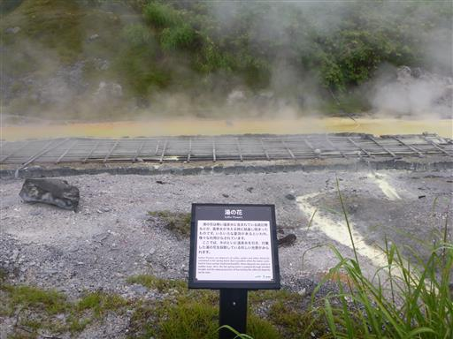
大噴。大量の温泉が湧き出している。
温度98℃、毎分8400Lの温泉が湧き出している。
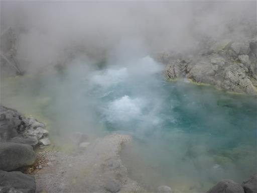
熱湯のためものすごい湯気の量だ。ほとんど何も見えない。
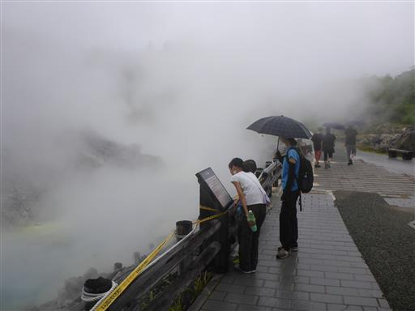
遊歩道はその先に続いている。
こちらはお湯は出ていないが、蒸気がもくもくと出ている。
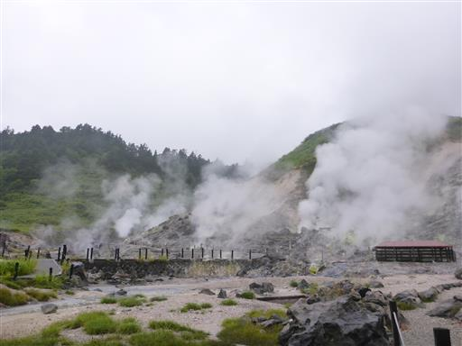
岩盤浴の施設が見えてきた。
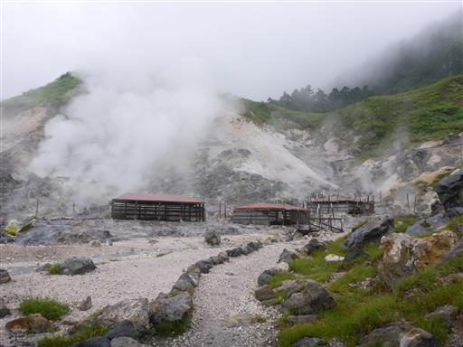
日除けのための簡易な小屋。地熱で地面の石がかなり熱い。
バスタオルを持っていたら、その上に寝転がって岩盤浴ができるようだ。
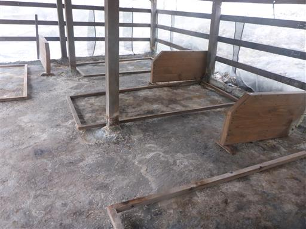
当然小屋周囲の岩も、全てが熱い。
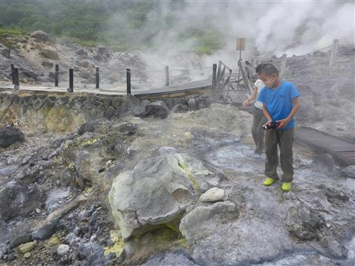
蒸気が吹き出しているところは、硫黄で黄色く染まっている。
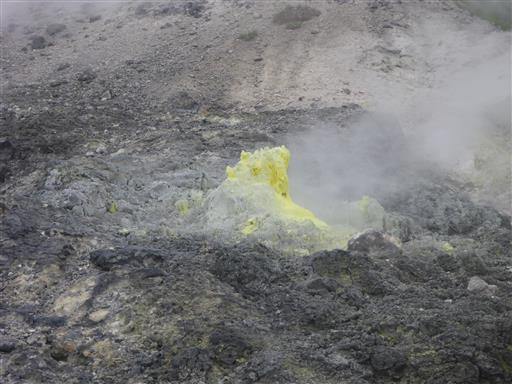
勢いよく吹き出す蒸気。
ゴーーーという音を出し続けている。
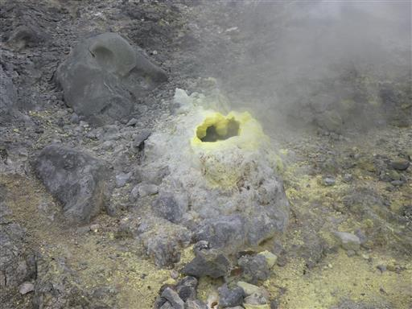
こんな景色を間近で観察することができる。
多くの火山を訪れたことがあるが、こんなに迫力のある風景の場所は初めてだ。
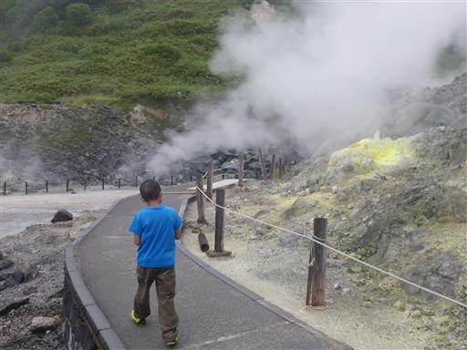
少し高台から見下ろす。荒涼とした景色だ。
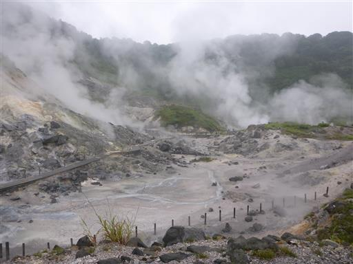
遊歩道から少し外れた場所にある玉川薬師神社に立ち寄る。
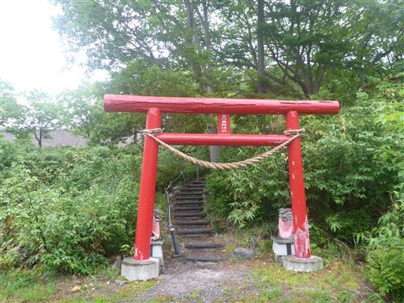
比較的小さな神社だ。お参りしてから帰路につく。
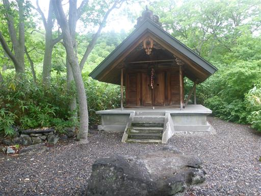
帰りにグランマート田沢湖店に立ち寄り、食料を買い込む。
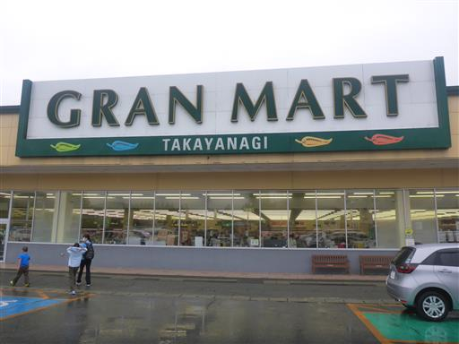
キャンプ場に戻った後は、網張温泉のホテル内のコインランドリーで洗濯だ。
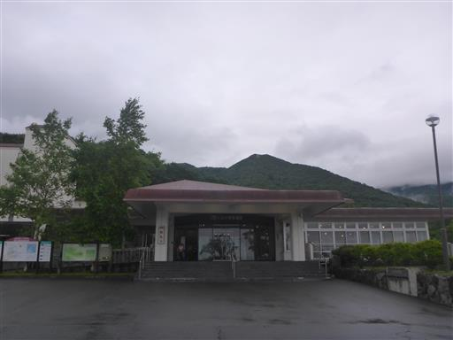
ここからはキャンプ場を見下ろせる。
この辺りは日中土砂降りだったらしく、キャンプ場は水浸しだ。
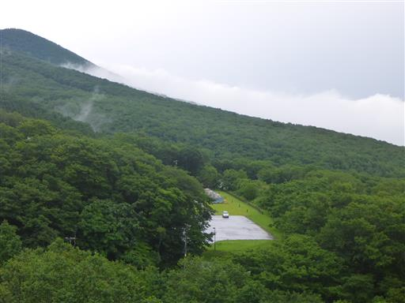
キャンプ場とホテルの間は少し距離がある。
洗濯、乾燥、取り出しと3往復する必要がある。
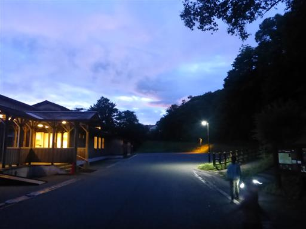
間にある吊橋。通路はきれいに整備されている。
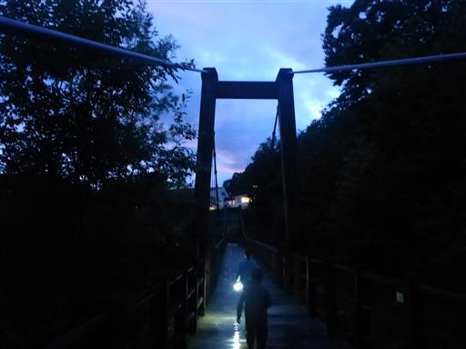
トイレ前でコガネムシを発見。きれいな黄金色だ。
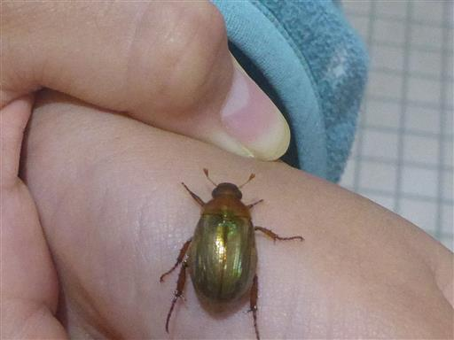